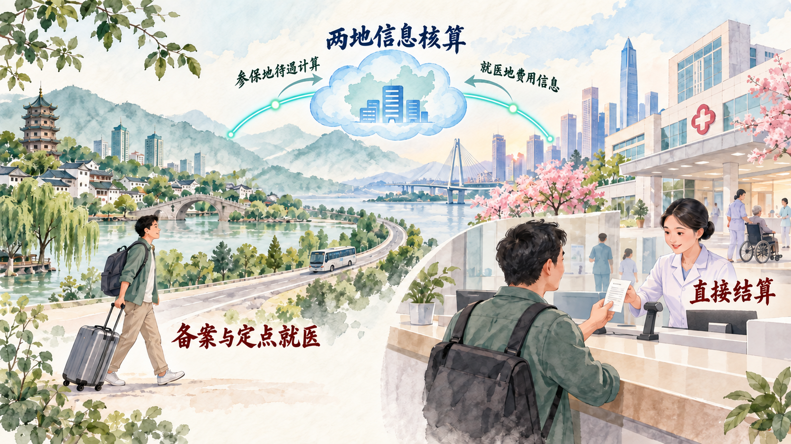
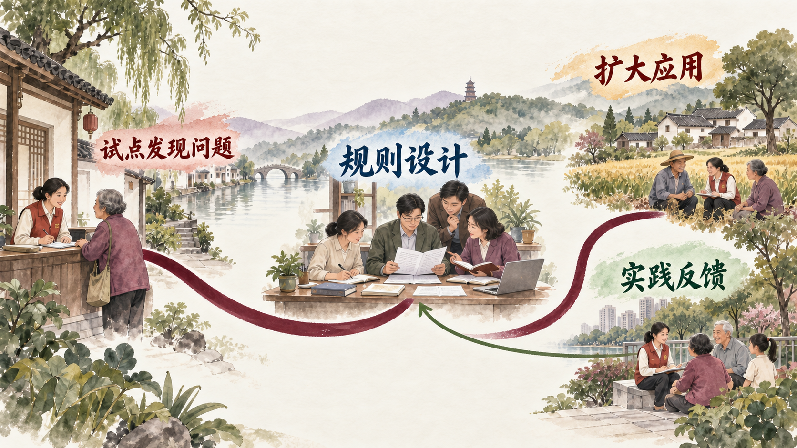

一个公共服务为什么需要一整套制度
一个人在外省医院就医时，医院掌握诊疗费用信息，参保地掌握医保支付规则。要在医院柜台直接结算，两地的目录、费用、支付信息及审核职责就需要通过共同系统衔接。这个场景帮助理解本节三项教材内容的关系：总目标明确制度改革的方向，治理体系与能力说明制度怎样运行，正确方法论说明统一规则与地方探索怎样相互促进。
一、坚持全面深化改革总目标
党的十八届三中全会提出全面深化改革总目标：完善和发展中国特色社会主义制度、推进国家治理体系和治理能力现代化。前半句规定改革应坚持什么、完善什么；后半句要求制度在组织、执行和解决问题的过程中形成治理效能。两句一起理解，可以看到不同部门的效率改进由共同方向统领，组成跨领域的系统工程。
不同领域改革各有具体问题。经济体制要处理市场与政府的关系，社会保障改革要处理不同地区之间的服务衔接，生态文明改革要让生产活动与环境责任相协调。总目标为这些领域提供共同的制度方向，重点领域和关键环节的改革则使总目标在具体问题中能够落实。这样，制度建设成为主线，各领域依据实际任务和条件确定改革节奏。
参考资料｜2013 年改革总目标与 2024 年进一步全面深化改革
2013 年党的十八届三中全会《中共中央关于全面深化改革若干重大问题的决定》提出全面深化改革总目标，并在经济、政治、文化、社会、生态文明和党的建设等领域作出部署。它回答了进入深水区的改革怎样形成共同方向与整体安排的问题，也把顶层设计与试点探索放在同一推进过程中。
2024 年党的二十届三中全会通过《中共中央关于进一步全面深化改革、推进中国式现代化的决定》。文件在新时代制度建设基础上，进一步将改革任务同中国式现代化联系起来，安排经济体制、教育科技人才、民生保障、生态文明、对外开放和党的领导等多领域举措。比较两份文件，能够看到改革目标的延续和具体任务的阶段性调整：同一个总目标随着发展条件和现实问题变化，形成新的改革议程。
阅读中央决定时，可以把“总目标”“领域任务”和“实施机制”分开：总目标回答朝向，领域任务回答要解决什么问题，实施机制回答谁推进、怎样协调与评价。2013 年的部署为全面深化奠定制度框架，2024 年的决定在推进中国式现代化的新任务中继续展开这一框架。
资料来源：中国共产党新闻网《中共中央关于全面深化改革若干重大问题的决定》，2013 年 11 月 15 日；中国政府网《中共中央关于进一步全面深化改革、推进中国式现代化的决定》，2024 年 7 月 21 日。
二、推进国家治理体系和治理能力现代化
国家治理体系可以理解为管理国家各方面事务的制度安排和相互衔接的体制机制；国家治理能力是运用这些制度处理实际事务的能力。前者提供规则、职责和组织框架，后者考验信息能否传递、部门能否协同、服务能否落地。全国政策通过参保地、就医地、联网机构和全国信息平台按规则协同工作，才在医院柜台形成患者可使用的结算服务。
跨省结算的基本办理链包括提前办理异地就医备案、在联网定点医药机构产生合规费用、就医地上传费用与就医信息、参保地按当地待遇政策计算个人应付和基金支付部分，然后将结算结果传回就医地。就医地的目录和参保地的支付政策各有作用，患者在结算窗口只支付应由个人负担的部分。改革的结果是患者避免先行垫付和事后两地奔波。
案例研究｜一位江西患者在海南医院怎样完成跨省结算
2021 年 12 月 1 日，国家医保局报道江西萍乡一位参保人在海南省中医院完成恶性肿瘤门诊放化疗费用的首例跨省异地就医直接结算。患者在就医地接受服务，费用信息通过联网结算体系传给参保地，参保地按其医保待遇规则确定支付结果，就医地医院据此在窗口完成结算。患者在外省即可获得一次明确的费用结算，参保关系仍在江西。
这一业务的难点跨越多个主体。医院须是联网定点机构，服务和收费信息要准确；就医地按当地有关目录和管理规则处理费用，参保地负责待遇核算；全国和省级信息系统负责传送记录与结算结果，患者则须符合异地就医备案等办理条件。各地医疗服务条件和保障政策不同，改革建立了识别不同费用目录与待遇政策的制度接口，使结算能够完成。
直接结算最初经历地区和业务类型的试点，再逐步扩大并完善全国平台。国家医保局 2025 年统计公报记录跨省异地就医直接结算 3.08 亿人次、减少群众垫付 2075.06 亿元，跨省联网定点医药机构 65.58 万家。这三项数字分别记录全国全年的结算业务量、减少垫付金额和联网机构规模。数量扩大依赖标准、系统、机构和政策之间的持续配合，也使跨省生活、工作或陪护家人的青年更容易理解公共服务的运行方式。

讨论题
- 如果你在广州参保、假期到外省医院就诊，先要弄清哪三个办理条件，才能判断能否直接结算？
- 医院掌握诊疗费用，你的参保地掌握待遇规则，哪个环节负责把两者连起来？
- “减少垫付”与“报销比例更高”是同一件事吗？请用一次医院结算说明区别。
资料来源：国家医疗保障局《跨省异地就医直接结算患者实例与政策说明》，2021 年 12 月 10 日；中国政府网《关于进一步做好基本医疗保险跨省异地就医直接结算工作的通知》，2022 年 7 月；国家医疗保障局《2025 年全国医疗保障事业发展统计公报》，2026 年 7 月 16 日。
参考资料｜直接结算、转移接续和亲属共济怎样区分
跨省异地就医直接结算处理的是参保关系仍在一地、人在另一地联网机构就医时的费用结算。符合条件并完成必要备案后，参保地待遇信息与就医地费用信息在系统中匹配，患者在就医地支付个人负担部分，参保关系继续保留在原参保地。
医保关系转移接续发生在工作、居住等变化导致参保地需要改变时。办理转移接续涉及参保信息、相关权益和个人账户资金的衔接，目的是在不同参保地之间保持保障关系的连续。它处理本人参保关系的变更；异地医院账单由直接结算业务处理。
亲属共济是符合政策条件的近亲属使用参保人的医保个人账户资金支付相关费用。跨省共济可借助医保钱包等制度和系统实现，使用的是个人账户资金；统筹基金报销资格仍依各人自身的参保与待遇条件确定。分别辨认“费用在哪儿结算”“本人参保地是否变化”和“谁的个人账户支付”，就能理解三项制度各自解决的问题。
资料来源：国家医疗保障局《基本医疗保险关系转移接续暂行办法》，2021 年 11 月 26 日；国家医疗保障局《跨省共济政策说明》，2026 年 6 月 10 日；国家医疗保障局《个人账户共济与统筹报销的区别》，2026 年 5 月 26 日。
三、全面深化改革开放要坚持正确方法论
全面深化改革涉及不同部门和地区，既要确定共同目标，也要在实施中认识具体规律。顶层设计提供方向、制度框架、任务分工和政策衔接；地方探索在实际办事中发现流程堵点，检验哪些做法可行、哪些条件必须保留。教材强调两者的辩证统一：试点依据总目标开展，顶层设计吸收对真实问题的观察。
以跨省就医为例，地区试点首先发现目录对接、费用信息传递和机构联网等实际问题；全国性政策与平台再把分散经验转化为比较一致的办理规范；扩大实施又会带来新的病种、机构和人群问题，促使规则继续调整。对一项改革，可以按照“发现问题—提出办法—试点检验—制度衔接—扩大实施—反馈调整”追踪，并核对做法在不同地区的适用条件。

新闻摘录｜四川的咖啡店怎样经历另一种“一件事”改革
新华社 2025 年 7 月报道，成都新都区一家名为“10°咖啡”的旗舰店通过开办餐饮店“一件事”办理相关证照。报道介绍，企业申请的事项从不同业务入口进入统一办理流程，店家在提交材料当天即取得部分证照。成都锦江区的下亭桥面馆也由经营者讲述了办结后的变化：证照在一周多时间内到手，开店安排因此能够更清楚地推进。
四川将改革任务推广至全省 183 个县（市、区）政务服务大厅，报道截至 2025 年 5 月已有超过 1.26 万家餐饮店通过相关服务办理。省级层面重组部门流程，报道给出的总体比较是审批环节由 17 个减为 2 个、办理时限由 48 个工作日压缩至 13 个工作日、材料由 35 份减为 17 份。四川报道记录实施过程中的省级流程口径；上海方案给出符合条件事项的目标时限，两地数字须按各自口径阅读。
报道还提到，自贡尝试预审，经营者在正式提交前得到相关部门关于场地和材料的指导。统一事项清单使省内申请有共同依据，地方又按经营场所、人员和实际需要调整服务方式。上海与四川的实践共同说明，同一全国改革任务的具体实施必须经过地方流程设计和经验反馈；从窗口服务到后台分工，改革要让食品安全、消防与便利经营各环节都能找到负责的部门。
讨论题
- 同为开办餐饮店“一件事”，比较上海的“7 个工作日”和四川的“13 天”时，你会先核对哪些适用条件和统计口径？
- 如果你负责设计校园周边开店服务，预审、统一提交和并联审查各解决什么问题？
资料来源：新华社《四川全面推进开办餐饮店“一件事”改革》，2025 年 7 月 23 日。